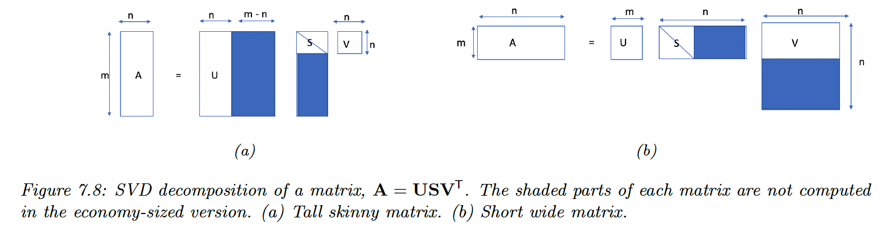

SVD generalizes EVD to rectangular matrices. Even for square matrices, an EVD does not always exist, whereas an SVD always exists.
7.5.1 Basics
Any real m×n matrix can be decomposed as:
A=USV⊤=σ1∣u1∣[—v1⊤—]+⋯+σr∣ur∣[—vr⊤—] with Uand V orthogonal matrices (left and right singular vectors):
- UU⊤=Im
- VV⊤=In
- S is a m×n matrix, containing the rank r=min(m,n) singular values σi≥0.

The cost of computing the SVD is O(min(mn2,m2n))
7.5.2 Connection between EVD and SVD
If A is real, symmetric, and positive definite, then the singular values are equal to the eigenvalues:
A=USV⊤=USU⊤ More generally, we have:
A⊤A=(VS⊤U⊤)(USV⊤)=V(S⊤S)V⊤ Hence:
(A⊤A)V=VDn - evec(A⊤A)=V and evec(AA⊤)=U
- eval(A⊤A)=Dn and eval(AA⊤)=Dm
- In the economy size SVD: D=S2=S⊤S=S⊤S
7.5.3 Pseudo inverse
The Moore-Penrose pseudo-inverse of A is denoted A† and has the following properties:
AA†AA†AA†(AA†)⊤(A†A)⊤=A=A†=AA†=A†A If A is square and non-singular, then A†=A−1
If m>n and all columns of A are linearly independent (i.e. A is full-rank):
A†=(A⊤A)−1A⊤ In this case, A† is the left inverse of A (but not its right inverse):
We can also compute the pseudo-inverse using the SVD:
A†=Vdiag([1/σ1,…,1/σr,0,…,0])U⊤
When n<m, the right inverse of A is:
A†=A⊤(AA⊤)−1 and we have:
7.5.4 SVD and the range and null space
We show that the left and right singular vectors form an orthonormal basis for the range and nullspace.
We have:
Ax=j=1∑rσj(vj⊤x)uj where r is the rank of A.
Thus Ax can be written as any linear combination of left singular vectors u1,...,ur:
range(A)=span({uj:σj>0}) with dimension r.
For the nullspace, we define y∈Rn as a linear combination of the right singular vectors for the zero singular values:
y=j=r+1∑ncjvj Then:
Ay=Uσ1v1⊤y⋮σrvr⊤yσr+1vr+1⊤y⋮σnvn⊤y=Uσ10⋮σr00vr+1⊤y⋮0vn⊤y=U0=0 Hence:
nullspace(A)=span({vj:σj=0}) with dimension n−r.
We see that:
dim(range(A))+dim(nullspace(A))=n This is also written: rank+nullity=n
7.5.5 Truncated SVD
Let AK=UKSKVK⊤ where we use the K first columns. This can be shown to be the optimal rank K approximation of A in the sense of:
∣∣A−AK∣∣F=k=K+1∑rσk If K<r=rank(A), we incur some error: this is the truncated SVD.
The number of parameters needed to represent an M×N matrix is K(M+N+1).

{kind=link}
{kind=link}